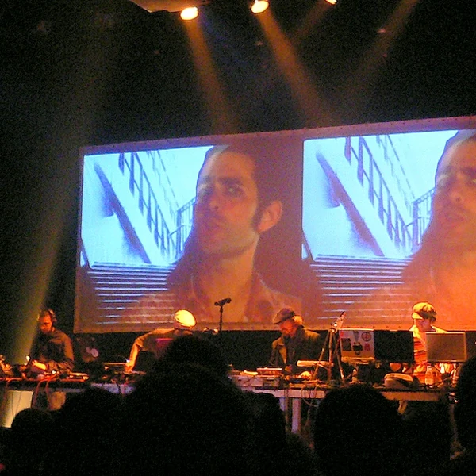
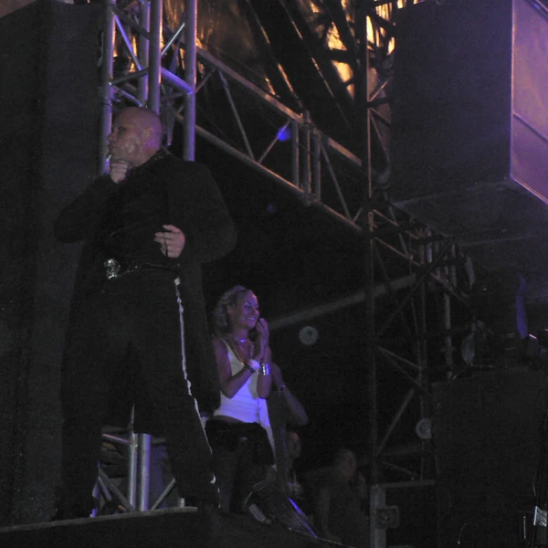
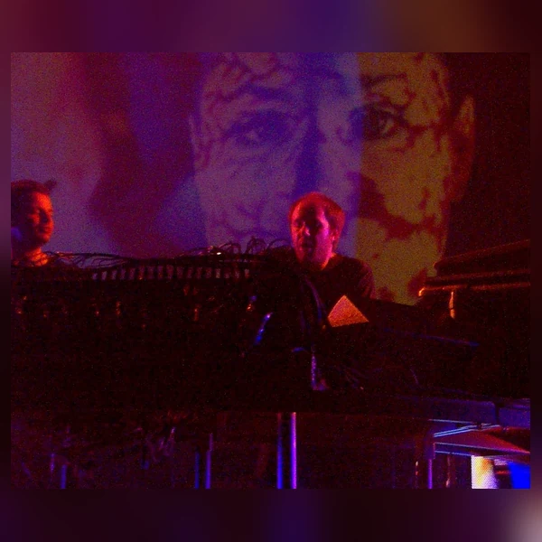
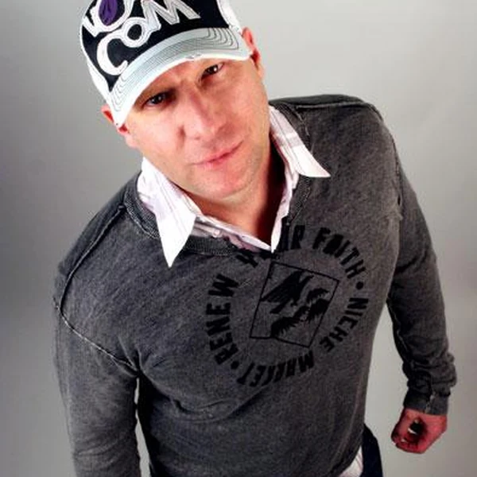
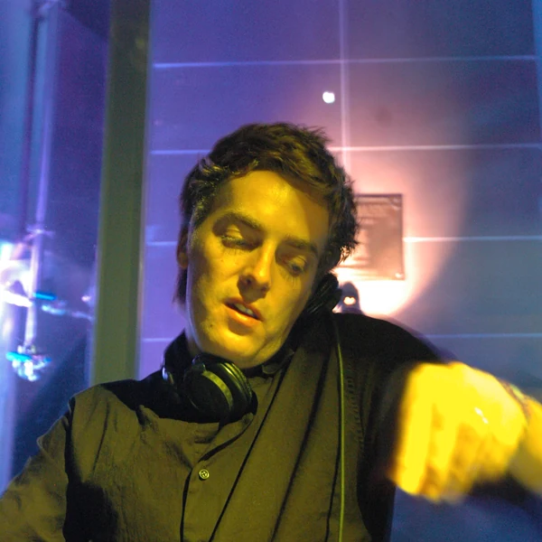
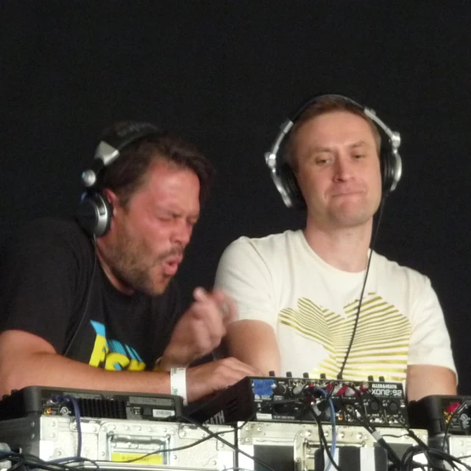

Breakbeat describes dance music built around broken, syncopated drum patterns rather than a kick drum on every beat. The term also refers to the rhythmic technique behind it, which is why its boundaries can be confusing. A producer might take a short passage of live drumming, repeat it and rearrange its individual hits into a new pattern. That approach became central to Hip Hop before finding another home in electronic club music. As a genre, Breakbeat includes styles that developed around those uneven rhythms without necessarily sharing the same tempo or mood. Some tracks use familiar sampled drums, while others recreate the effect with programmed percussion. The rhythm gives the music an unsettled, rolling quality that a steady House beat does not produce in quite the same way. Breakbeat is therefore both a type of club music and an idea that has travelled through several genres. The distinction is useful, even if record shops have not always agreed where to file it.
A break originally referred to a passage in a recording where much of the arrangement drops away and the rhythm becomes more prominent. In Funk and other dance music, that often meant a short stretch where the drums had room to take over. Early Hip Hop DJs noticed that dancers paid particular attention to these moments, so they used two turntables to keep the breaks going longer. The repeated drum patterns became known as breakbeats. Later, samplers made it possible to cut up the same kind of passage and rearrange it without constantly switching records. The word gradually expanded from the beat itself to music constructed around it. That broader meaning can be confusing because Jungle, Drum & Bass and parts of Hip Hop also rely heavily on breakbeats. When people say Breakbeat as a genre, they are usually talking about particular electronic dance styles rather than claiming ownership of every drum pattern with a bit of syncopation.
The story of Breakbeat begins well before electronic rave music. In the Bronx during the 1970s, Hip Hop DJs extended the drum breaks of existing recordings to keep dancers moving. Once samplers became more accessible, producers could take those rhythms apart and rebuild them with a freedom that turntables alone could not offer. British rave producers carried this approach into faster dance music around the end of the 1980s. Breakbeat Hardcore helped establish a new rhythmic language, and some of its more intense experiments developed into Jungle and Drum & Bass. Other producers kept working at less extreme tempos, combining broken beats with House, Electro and other club influences. During the 1990s, Big Beat brought some of those ideas to a wider audience, often with a deliberately rougher and more immediate sound. Underground Breakbeat styles continued alongside it, and digital production later made intricate drum editing much easier. The technology changed considerably, but the basic appeal of taking a rhythm apart to make it move differently remained.
The main difference between Breakbeat and a straight House rhythm is the placement of the drums. Instead of a kick landing on every beat, the kick and snare form a pattern with accents that arrive in less predictable places. There is still a pulse underneath, but the drums seem to pull against it. Many producers start with a sampled drum performance and cut it into pieces, sometimes preserving the slight variations of a real drummer and sometimes rearranging everything beyond recognition. Others programme the same rhythmic feel from scratch. Basslines tend to work closely with the drums, filling the gaps or adding weight to particular hits. The melodies and textures vary widely because Breakbeat has never been restricted to one sound palette. Some tracks keep the arrangement fairly simple so the rhythm can do the work. Others are full of edits and abrupt changes. A complicated drum pattern is not automatically a better one, of course. The important part is whether the rhythm actually makes sense when you hear it moving.






Breakbeat helped turn the recorded past into raw material for making new music. The techniques developed by Hip Hop DJs challenged the idea that a record could only be played from beginning to end, and sampling later gave producers with modest equipment ways to create sounds that once required an entire band. This opened creative opportunities, particularly in scenes operating outside the budgets and expectations of major labels. It also raised an awkward question about whose work was being reused. A drum performance could become the foundation of countless new tracks without its original player receiving much attention or payment. Copyright disputes forced the industry to take sampling seriously, although the arguments about ownership have never been neatly settled. Breakbeat also connected communities that were often discussed as separate musical worlds, especially Hip Hop and British rave culture. Its influence is easy to hear across electronic music, even if the word itself is less famous than some of the genres that grew from the technique.